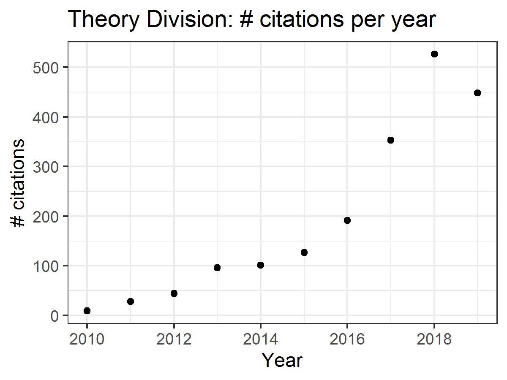
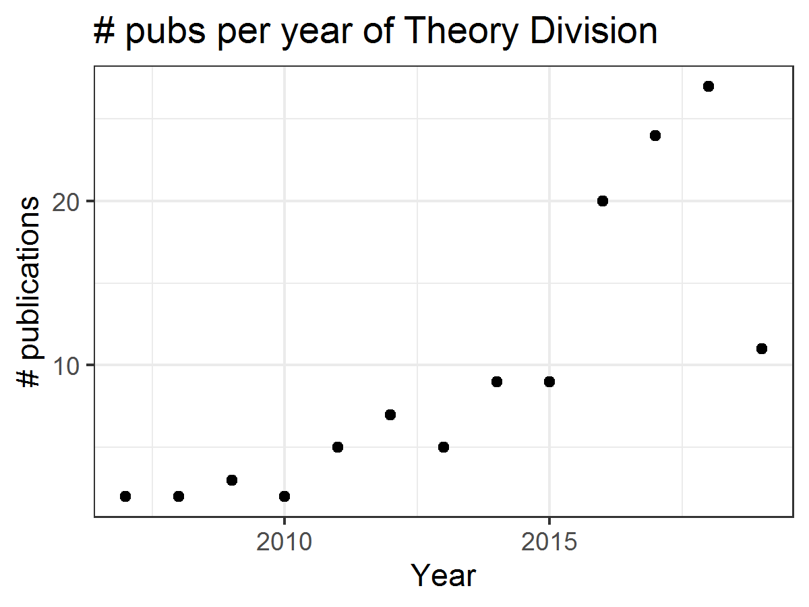

Research
We now know that cancer proceeds via combined evolutionary and ecological processes. There is irrefutable evidence that populations of cancer cells change as individual cells mutate and selection forces act to shape the population into more fit phenotypes. We now understand that not only do individual cells escape these selection forces by interacting with their environment, including stromal cells like fibroblasts, but also with other tumor cells. However, while basic scientists have established these facts, little, if any, of this knowledge has translated into clinically actionable information; and, more frustratingly, while many scientists have begun to accept these facts, it has not changed the pursuit of ‘silver bullets’: drugs to act on single targets awash in a sea of heterogeneity. In Theory Division, we use a host of tools to approach this problem, with our focus on the evolutionary mechanisms themselves, rather than the specific solutions evolution finds. Below is a snapshot of a few of the things we like to think about... please reach out with questions or ideas - science is a team sport!
Evolution on adaptive (fitness) landscapes
Evolution can be described in many ways. One mathematicall convenient way is consider evolution like a search for peaks (points of highest fitness) on a rugged landscape.
If you allow each unique genotype to be a location in space (say the x,y coordinates on a map), then the phenotype is the 'height'.
If you now consider each 'map' to be a different drug, you start to reason about how different therapies would affect populations under selection by them.
We have modelled bacterial evolution in this way and found that evolution could be effectively 'steered', by a clever ordering of different landscapes, though in reality it is not perfectly controllable because of evolutionary contingencies, but may be predictable.
More recently, we have worked to incorporate machinery from statistical mechanics, together with the Hinczewski group in Case Physics to formally derive counter-diabatic driving protocols to allow precise control of the speed and trajectory of populations as they navigate these landscapes.

|
|
Evolutionary Bioreactor
The emergence of drug resistance is the key stumbling block in our fight against cancer.
Though our tools can be extremely effective in the short term, it is inevitable that they willfail in the majority of cancers.
As an evolutionary phenomenon, we know that the cancer we are treating will “figure out” a way to evade, subvert, and fight back against what we throw at it.
We know where the cancer will end up but have relatively little idea how it gets there.
We are designing and building a device based on the “morbidostat” framework from the study of antibiotic resistance which we call the EVE system (EVolutionary biorEactor).
This will allow us to watch and measure cancer cells on their evolutionary journey towards resistance.
It will subject the cells to the same therapies they would experience in patients, but allow us to observe how the cells grow and change much more closely than we ever could in people.
The system will be fully robotically automated, providing us a tightly-controlled experimental environment where we can manipulate conditions and see how the cancer cells adjust.
Information about the paths that cancers take to resistance can give us new insights about when and how we can intervene while we still can.
Our device will allow us to ask and answer questions such as “Can we steer a cancer’s path to slow its progression to resistance?” and “Are there certain times that are better to act than others?”
|
|
|
Evolutionary Game Theory
We have an interest in the application of evolutionary game theory to the study of cancer, specifically to the evolution of resistance.
Evolutionary game theory allows us to model and perturb the complex cooperative and competitive dynamics between sensitive tumor cells, resistant tumor cells, and the microenvironment.
We use mathematical (systems of differential equations) and computational (numerical simulation) models (right), and an experimental game assay we have developed (co-culture and automated cell-counting) (left) to investigate these interactions.

Data Science
With regards to data science, our interests span the breadth of clinical cancer research, ranging from developing novel biomarkers of disease, to selecting personalized therapies (including personalized radiation therapy dosing), and monitoring for resistance.
Using datasets encompassing clinico-pathologic, biologic, and genomic data, we hope to design new tests, and lay the groundwork for novel anticancer therapies.
To study large high dimensional datasets, we use a combination of high-performance computing and statistical approaches, on problems such as developing gene signatures for drug sensitivity and resistance in Ewings Sarcoma, understanding the functional role of newly characterized non-coding RNA, and determining methods of combining microRNAs into therapeutic cocktails.
Lab Research Statistics
Lab h-index = 25|  |  |